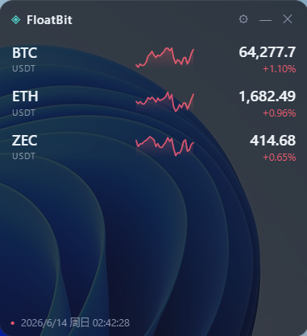
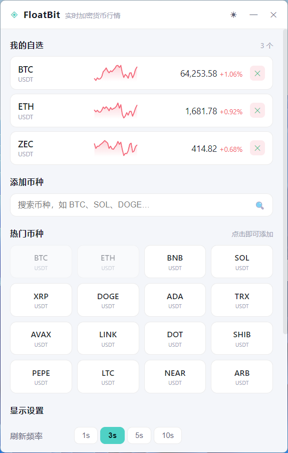
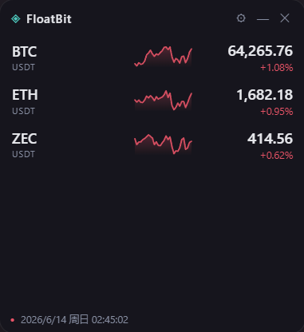

🪟
悬浮置顶，不挡视线
无边框半透明窗口，始终浮在最上层，可自由拖动并记忆位置。盯盘的同时，工作流不被打断。
⬛ 你的工作窗口
📄 文档 / 代码
◈ FloatBit
BTC 64,193
ETH 1,679
FloatBit 是一款简约优雅的桌面加密货币行情悬浮窗。 BTC、ETH 等价格实时更新，始终浮在屏幕一角，配走势小图，一眼掌握涨跌。
该有的都有，多余的都没有。
无边框半透明窗口，始终浮在最上层，可自由拖动并记忆位置。盯盘的同时，工作流不被打断。
通过合约成交推送接收行情，电脑和手机约每秒显示一次最新价，平稳易读。
迷你 K 线，颜色跟随当日涨跌。
币安全部可交易合约随你搜，热门一键添加。
明暗主题一键切换；绿涨红跌 / 红涨绿跌随心选。
数据来自币安 USDⓈ-M 合约公共接口，不读取任何 API 密钥。
主面板负责管理与设置，悬浮窗专注实时展示，半透明玻璃质感融入桌面。



FloatBit 安卓版，把行情悬浮窗带到手机桌面。
下载、运行、盯盘，就这么简单。
下载 Windows 安装包，双击安装，自动创建桌面与开始菜单快捷方式。
打开主面板，搜索或从热门币种一键添加你关注的 BTC、ETH 等。
悬浮窗浮在屏幕一角实时跳动，调整透明度与置顶，专注又不挡视线。
桌面端 Windows 10 / 11 · 手机端 Android 7.0+ · 完全免费
Windows 1.2.1：每秒显示最新价，减少频繁跳动和闪色
Android 1.2.2：主列表和悬浮窗每秒显示最新价，保留完整价格显示
1.2.0：成交实时推送 · 自动直连 · 启动加速 · 修复 Windows 安装中断
Android 1.2.2 可直接覆盖官网 1.1.0 / 1.1.1 / 1.2.0 / 1.2.1 版，保留自选；从原 1.0 版升级需先备份自选、卸载旧版后安装。
Windows 1.2.1，约 75 MB · Android 1.2.2，约 6.2 MB，当前为 debug 构建 · SHA-256 校验值